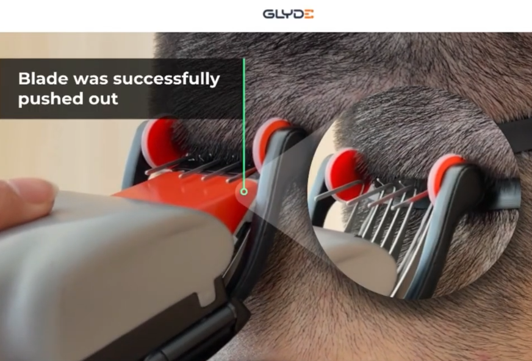
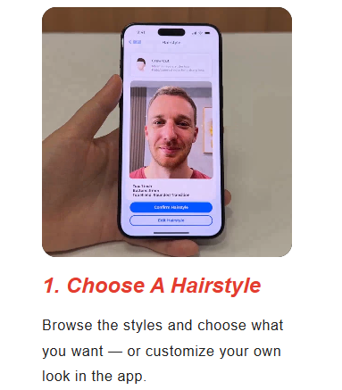

A smart hair clipper that physically prevents regret.

Cutting your own hair is one of those activities that starts with confidence and ends with a hat. GLYDE is trying to eliminate the hat phase. It’s a “smart hair clipper” built for beginners, designed around a simple idea: the clipper should stop you from doing the thing you’re about to do wrong. The blade can auto-retract and adjust while you cut, so instead of freehanding a fade like you’re defusing a bomb, you’re basically following a system that’s trying to keep you out of trouble. If you want the official site: smarthairclipper.com .
Here’s the workflow: you put on a headband that marks the starting height of the cut. Then you place the clipper against the strap — once it recognizes you’re at the correct starting location, the blade extends like it’s saying “okay… we can begin.” From there you move upward around the head, and depending on the style you picked, it changes blade height as you go. The clipper tracks its angle, tilt, and speed, which means you’re no longer “cutting hair” so much as “piloting a haircut.”
The dream is obvious: you learn one tool and suddenly barber visits become optional. There’s no official price yet — you can currently request to buy it — but if it lands in the few hundred dollar range, it could be a genuinely worthwhile investment for anyone who cuts their own hair (or anyone who’s tired of paying “I own scissors” prices every month). Best case, you save money and time. Worst case, you still end up wearing a hat — but at least it’ll be a hat you chose, not a hat your haircut forced on you.